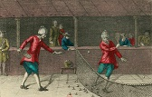
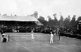

Lépj a pályára - Fedezd fel a teniszt!🎾
Ismerd meg a tenisz történelmét!
Ezen a weboldalon lehetőséged nyílik alaposan megismerkedni a tenisz izgalmas és gazdag történetével.
Fedezd fel a sport gyökereit a középkori Franciaországban, kövesd a fejlődését a modern teniszéig, és tudd meg, hogyan vált a tenisz a világ egyik legnépszerűbb sportjává.
Merülj el a tenisz történetének izgalmas részleteiben!
A tenisz története a kezdektől napjainkig

A tenisz gyökerei a 12. századi Franciaországig nyúlnak vissza, ahol a "jeu de paume" (a tenyér játéka) nevű sport volt népszerű.
Kezdetben a játékosok egy labdát kézzel ütögettek egymásnak, gyakran kolostorok udvarán, ami vallási és társasági események szerves része volt.
A labdát bőrből készítették, és az első időkben nem voltak hálók, hanem egyszerűen egy kötél vagy vonal jelezte a játékmezőt.
A 16. századra a jeu de paume egyre kifinomultabbá vált. Ekkor kezdtek ütőket használni, amelyeket kezdetben fából faragtak.
Az ütők megjelenése lehetővé tette a játék technikai fejlődését és a komplexebb szabályok kialakítását.
Ezzel párhuzamosan a játék népszerűsége egyre nőtt a nemesség körében, különösen Franciaországban, ahol a királyi udvar kedvelt időtöltése lett.
IV. Henrik francia király maga is lelkes játékos volt, és számos pályát építtetett kastélyaiban.
A 17. századra a játék elterjedt más európai országokban is, különösen Angliában, ahol a nemesség körében szintén divattá vált.
Franciaországban ekkor már fedett pályákon is játszották, és a sport egyre inkább strukturálódott. A játék neve is innen ered: a "tenez!" (fogjátok!) kiáltást használták a játék kezdésekor, innen származik az angol "tennis" szó.
A 18. században a tenisz népszerűsége csökkent Európában, mivel más sportok, például a krikett és a golf kezdtek dominálni.
Ennek ellenére a nemesség körében továbbra is játszották, főként Franciaországban és Angliában, de szabályai ekkor még nem voltak egységesek.

A 19. században a tenisz új lendületet kapott Nagy-Britanniában. Az 1870-es években Walter Clopton Wingfield kifejlesztette a modern tenisz alapjait, amelyet "sphairistike"-nak nevezett el.
Ezzel párhuzamosan kialakultak a füves pályák és a ma ismert szabályrendszer elődjei. 1877-ben rendezték meg az első wimbledoni tenisztornát, amely azonnal nagy sikert aratott.
A 20. század elején a tenisz gyorsan globális sportággá vált. Az 1900-as évek elejére már számos nemzet rendezett saját bajnokságokat, és a sport népszerűsége egyre nőtt.
Az 1913-as Wimbledon torna például már nemcsak brit, hanem nemzetközi versenyt jelentett. Ekkoriban kezdtek el kialakulni a nagy teniszlegendák, mint Bill Tilden az Egyesült Államokból és Suzanne Lenglen Franciaországból, akik népszerűsítették a sportot világszerte.
A 21. század elején a tenisz tovább fejlődött, és a játékosok egyre jobb teljesítményeket mutattak, amit a modern edzéstechnikák, táplálkozás és technológia (pl. új típusú ütők, fejlettebb statisztikák) segítettek.
Az élvonalbeli játékosok fizikailag és mentálisan is rendkívül felkészültek, és az új generációk, mint Carlos Alcaraz, Iga Świątek és Coco Gauff érkezésével a sport még inkább globálissá és izgalmassá vált.